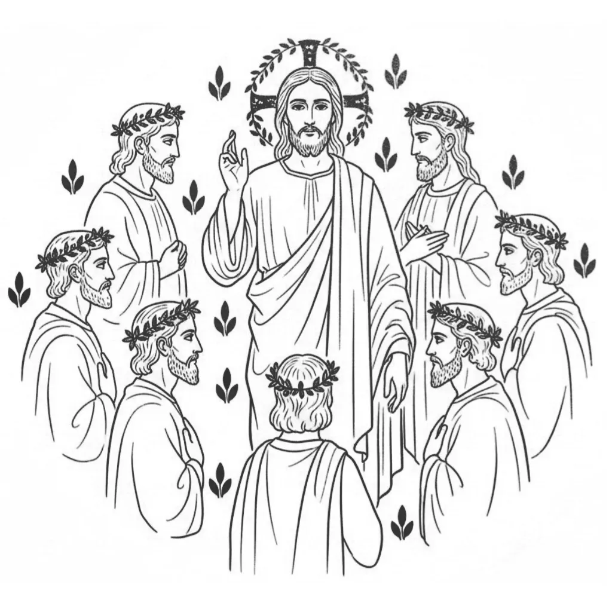

Government of the Self
"In the beginning God made the heaven and the earth." — Genesis 1:1
The word translated God in that opening line is not a personal name. It is Elohim — a Hebrew noun that is grammatically plural but governs a singular verb. Judges. Rulers. Divine ones. Mighty powers. A governing council speaking and acting as one. This is the first word Scripture uses to describe the creative force behind existence, and the choice is deliberate: creation does not begin with a solitary act but with a plurality in agreement.
Understanding what Elohim is — and what it is not — is the key to reading the entire Bible. The mystery of Scripture rests upon it.
The Three-Part Name
"And God said to Moses, I AM THAT I AM: and he said, You will say to the children of Israel, I AM has sent me to you." — Exodus 3:14
When Moses asks God for a name, the answer given is not Elohim alone. The full declaration is Ehyeh Asher Ehyeh — I AM that I AM. And the name by which God is known throughout the Hebrew scriptures is YHVH — the LORD — the Existing One, present consciousness, awareness here and now. These three — YHVH, Ehyeh, and Elohim — are not three separate gods. They are three aspects of a single operational structure, and Genesis encodes all three from its opening lines.
YHVH — the LORD — is present consciousness: awareness as it exists in this moment, whether absorbed in current circumstances or reaching toward a desired state. Ehyeh — I AM — is the identity that consciousness chooses to occupy: the assumed state, the declaration made within awareness. And Elohim — the Judges and Rulers — is the governing plurality that receives that assumed identity and enforces it into experience. The full name, declared at the burning bush, is the Elohim of I AM: the governing structure that operates in response to whatever identity is assumed within present consciousness.
This is the engine behind all of creation. YHVH presents an I AM. Elohim enforces it. The outer world is always the ruling of Elohim on the identity most dominantly assumed within.
Genesis 1 and Genesis 2 — The Court and the Petitioner
"And the Lord God made man from the dust of the earth, breathing into him the breath of life: and man became a living soul." — Genesis 2:7
Genesis 1 and Genesis 2 are not the same story told twice. They introduce two different aspects of the same structure. Genesis 1 is Elohim's domain — the establishing of the courtroom, the statutes of creation, the parameters of enforcement. Order proceeding from chaos. The governing plurality defining what exists and declaring it good. This is the mechanic before the petitioner enters.
Genesis 2 introduces a new name: YHVH Elohim — the LORD God. Present consciousness entering into relationship with the creation Elohim has established. The garden is not a physical location but the state of conscious interaction with created reality. And it is here, in Genesis 2, that identity becomes the primary creative unit — YHVH assuming I AM within the courtroom Elohim has built.
"Then God said, Let us make man in our image, after our likeness." — Genesis 1:26
The us and our of Genesis 1:26 are Elohim deliberating — the governing council in session, establishing the template through which identity will operate. Man is not a clay figure. Man is the legal and creative unit: the filing format through which YHVH assumes I AM and Elohim enforces it. To be made in the image and likeness of Elohim is to be constituted as a being whose assumed identity carries the force of the governing council behind it. Whatever is assumed as I AM, Elohim must enforce after its kind.
The Judges and Rulers Within
Elohim's plurality is not external. The judges and rulers are the many governing voices active within a single consciousness — the internal council that evaluates, deliberates, and ultimately enforces whatever identity is presented to it as dominant. Every assumption held persistently enough becomes a ruling. Every ruling shapes experience. The world is not separate from the one experiencing it — it is Elohim's enforcement of the identity most consistently assumed within.
"So that through the church the manifold wisdom of God might now be made known to the rulers and authorities in the heavenly places." — Ephesians 3:10
Paul's letter to the Ephesians names the same structure: rulers and authorities in the heavenly places — Elohim's governing plurality — receiving the manifold wisdom, the full declaration of the assumed I AM. The church here is not an institution. It is the assembled governing council receiving the filing and preparing to enforce it. The heavenly places are not above the sky. They are the inner jurisdiction where assumed identity carries the force of law.
The Number of Complete Governance
Elohim's plurality finds its complete expression in the number twelve. Twelve is the number at which a governing council becomes jurisdictionally whole — sufficient to rule, sufficient to enforce, sufficient to cover every dimension of the territory under its authority. This is not incidental to Scripture. It is structural throughout it.
The twelve sons of Jacob become the twelve tribes of Israel — the complete governing plurality of the people, Elohim's full council expressed as a nation. The twelve disciples are the same governing plurality brought under a single assumed I AM — the scattered internal voices gathered into one fold by the Shepherd of consciousness. When Judas departs in Acts 1, the first act before anything else proceeds is the restoration of the twelve to twelve. Elohim cannot enforce from an incomplete governing council. The court must be fully seated before the ruling can issue.
The twelve extends beyond Scripture into the structure of time itself. Twelve months complete the year — the full cycle of Elohim's enforcement from seed to harvest returning to seed. Twelve hours govern the day and twelve the night — the complete plurality presiding over both movements of the creative cycle, the greater light and the lesser, YHVH/LORD and the enforcing faculty, each governed by the same complete council of twelve. The clock face is Elohim's governing structure made visible in the ordering of every day.
"And a sword will go through your soul, so that the thoughts of many hearts may be uncovered." — Luke 2:35
Simeon's words to Mary at the presentation of Jesus in the temple are a precise description of Elohim's internal deliberation made visible — the many governing voices surfacing into consciousness, the council's thoughts revealed. The sword is not violence. It is the penetrating clarity of Elohim's judgement passing through the assumed identity, separating what is truly filed from what is merely hoped.
When Elohim is Divided
The governing council enforces whatever identity is most dominantly and consistently assumed. But Elohim is plural — and a plurality can be divided. When the twelve governing voices do not agree, when contradictory identities are simultaneously assumed, Elohim cannot issue a clean ruling. The result is what Scripture calls a wilderness: the formless middle state between the old enforced identity and the new one not yet fully assumed. Thread 7 names this the jurisdictional error — not moral failure but the mechanical consequence of presenting a divided filing to the court.
This is why Jesus says a house divided against itself cannot stand (Matthew 12:25) — not as a political observation but as a precise statement about Elohim's governing structure. A divided Elohim enforces a divided experience. The fragmented twelve — Legion, the scattered tribes, the disciples fleeing at Gethsemane — cannot enforce a unified I AM. Unity of assumption is the precondition of unified enforcement.
"Is there a division in your minds? — 1 Corinthians 1:13
Ezekiel's Wheels — The Eyes of Elohim
"Their rims were tall and awesome, and the rims of all four were full of eyes all around." — Ezekiel 1:18
Ezekiel's vision of the wheels full of eyes is Elohim's governing plurality in its full operation — the many-faceted council that observes every dimension of the assumed identity simultaneously and enforces accordingly. The eyes do not miss anything. Elohim's enforcement is not partial or selective. It sees the whole filing — not the stated desire but the dominantly assumed identity — and rules on that basis. The wheels within wheels are the governing cycles of enforcement turning within one another: month within year, hour within day, generation within covenant, the complete plurality operating at every scale simultaneously.
To Know Elohim is to Know the Structure of Experience
When Scripture opens with Elohim, it opens with the governing structure of all experience. Not a distant deity issuing commands from outside, but the council of judges and rulers that is already active within every consciousness, already enforcing whatever identity is most dominantly assumed, already ruling on every filing presented to it whether knowingly or not.
The invitation of the entire Biblical narrative — from Genesis to Revelation — is to become conscious of what is being assumed and therefore what Elohim is being asked to enforce. To move from unknowing petitioner to deliberate one. To present to the governing council not the identity that present circumstance suggests, but the identity chosen and assumed in full awareness — and to hold it long enough, singularly enough, for Elohim to issue the ruling that makes it the ground of lived experience.
This is what it means that the kingdom of God is within. Not a future state to be entered after death, but the governing structure of consciousness already operating, already enforcing, waiting only for a clear and sustained I AM to enforce.
"The kingdom of God comes not with observation: neither shall they say, Look here! or, look there! for, behold, the kingdom of God is within you." — Luke 17:20–21
About The Author | Numbers: Twelve | Elohim: God Series | Shepherd and Lamb Series